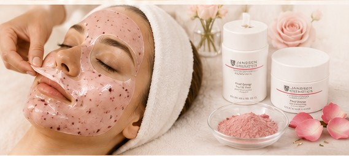

♧
HIDRATÁLÁS ÉS BŐRKOMFORT
A bőr hidratáltságának és komfortérzetének támogatása.
Ismerd meg a Janssen Cosmetics Floral Energy professzionális hidratáló és revitalizáló Peel-Off maszkkezelését!
A bőr hidratáltságának és komfortérzetének támogatása.
A rózsavíz és hibiszkuszkivonat különleges kombinációja.
A maszk segíti a frissebb, egyenletesebb bőrkép kialakulását.
Nyugodt környezet, figyelmes gondoskodás és megérdemelt én-idő.

A Janssen Cosmetics Floral Energy Peel-Off Mask egy professzionális, hidratáló és revitalizáló lehúzható maszk.
Szasza nagyon kedves, precíz és lelkiismeretes kozmetikus, aki mindig szívvel-lélekkel végzi a munkáját. Én nagyon szeretek hozzá járni, szívből ajánlom mindenkinek!– Alexandra
Próbáld ki a Janssen Cosmetics különleges Floral Energy maszkkezelését kedvezményes bevezető áron, a Szirom Kozmetikában.
Foglalj időpontot online!
Lefoglalom a kezelést! →Nincs előre fizetés. A részleteket időpontfoglalás után egyeztetjük.
A kezelés körülbelül 60 percet vesz igénybe.
A Peel-Off maszkot a kezelés végén óvatosan távolítjuk el. Az élmény általában kellemes és kíméletes.
A kezelés célja a hidratáltabb, frissebb, üdébb bőrmegjelenés támogatása. Az eredmény bőrtípustól és bőrállapottól függően egyénenként eltérhet.
A megfelelő kezelési gyakoriságot a bőröd aktuális állapota és egyéni igényei alapján, személyes konzultáció során érdemes meghatározni.
Egyszerűen, online az időpontfoglalási oldalon: idopont.skopy.familyds.net.
Szentendrén. A pontos címet és a további tudnivalókat az időpontfoglalás során egyeztetjük.
Engedd meg magadnak azt az egy órát, amikor minden figyelem rád irányul.
Vár Szasza egy különleges, professzionális Janssen Cosmetics Floral Energy kezelésre!